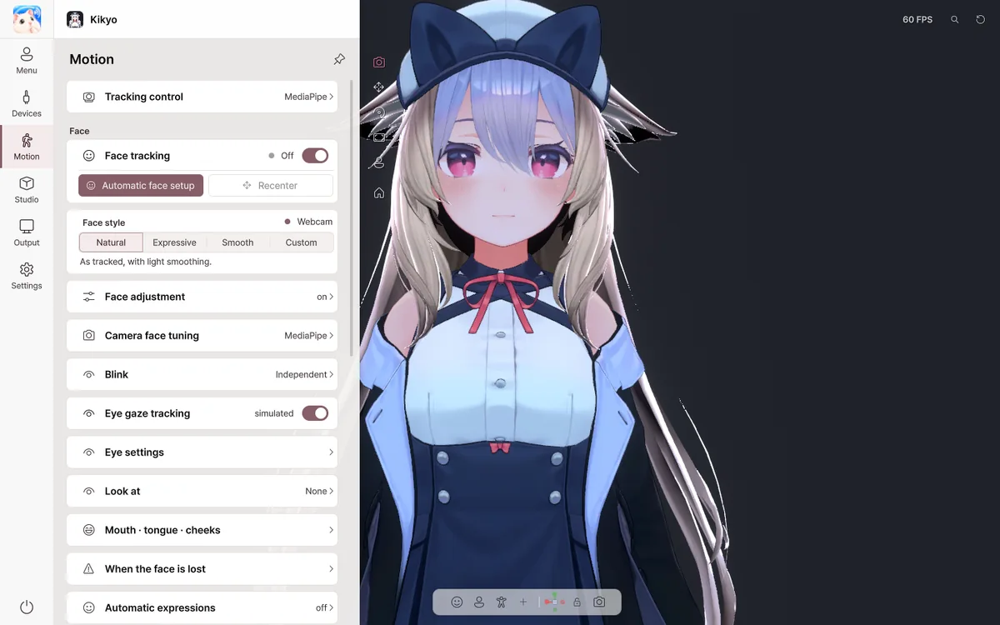
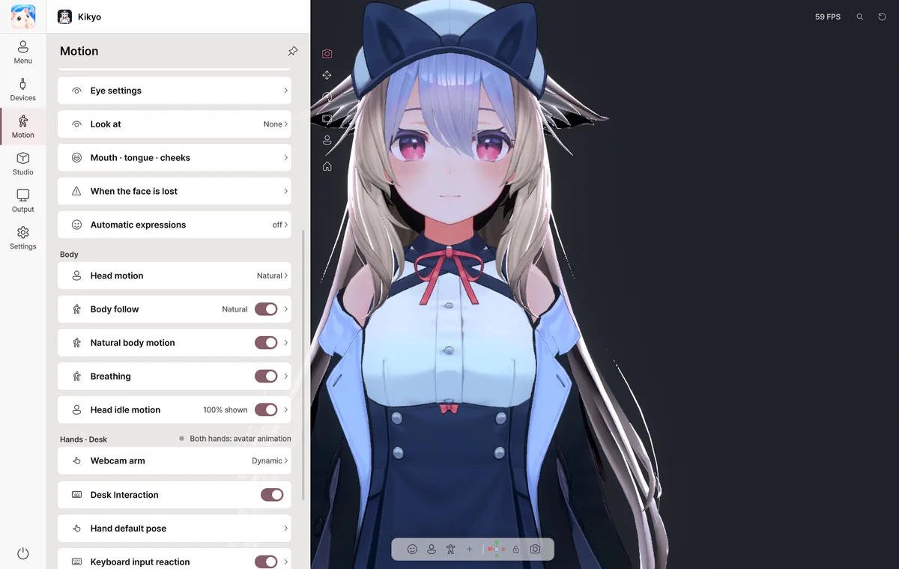
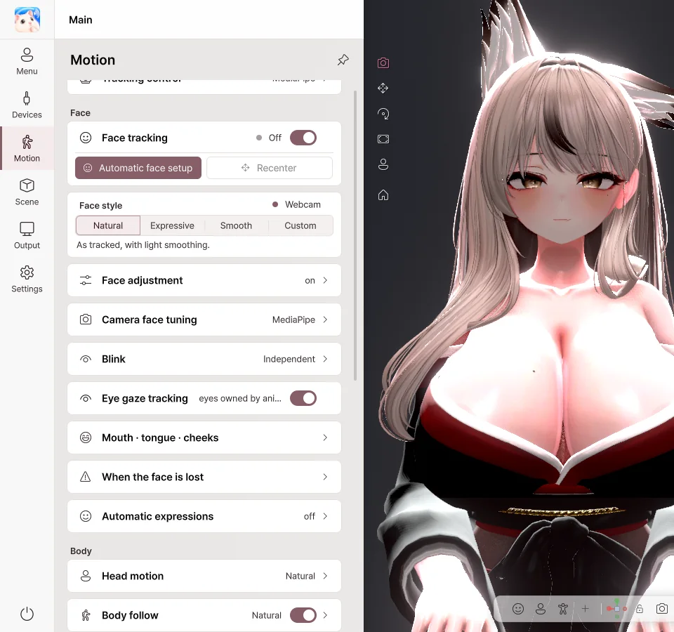
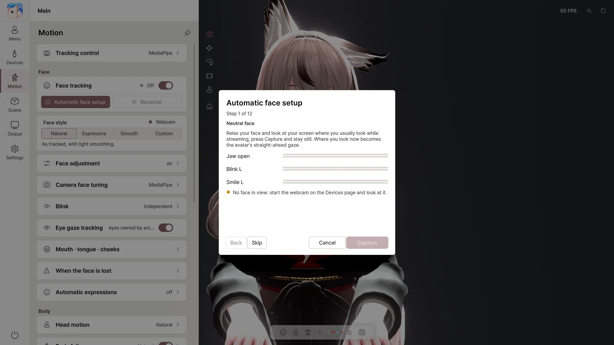
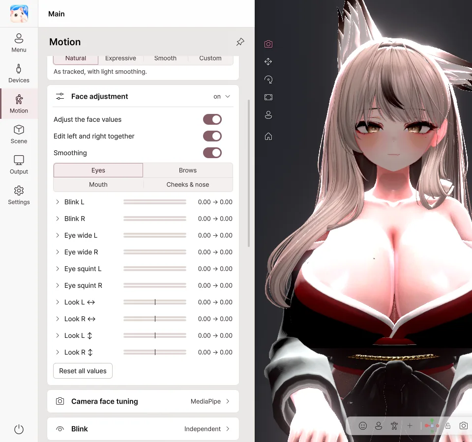
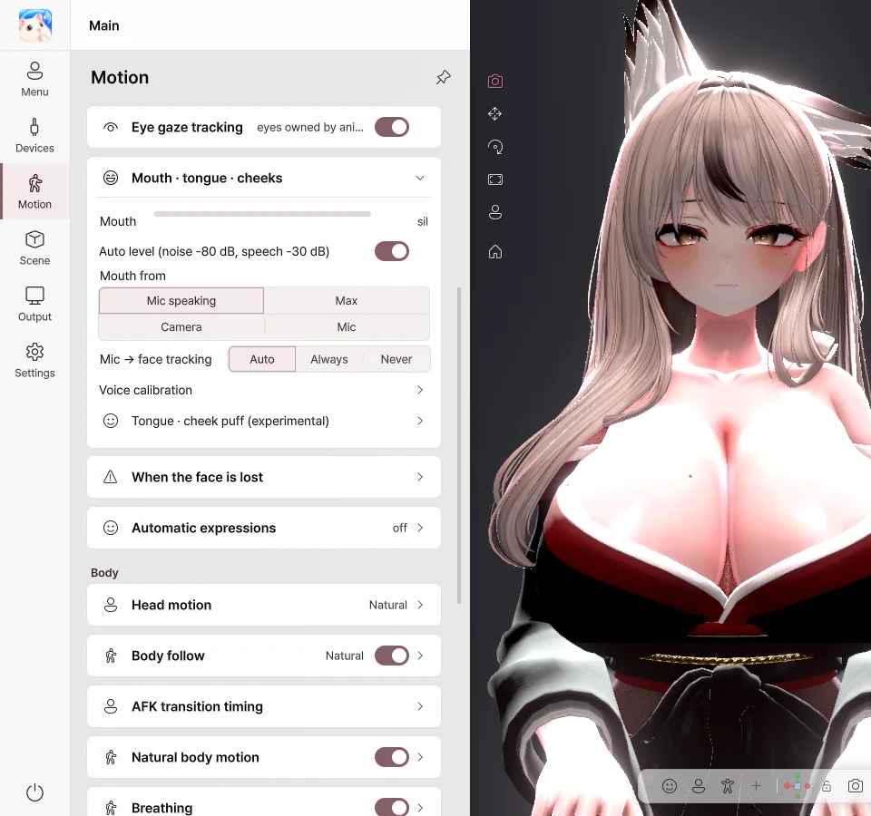
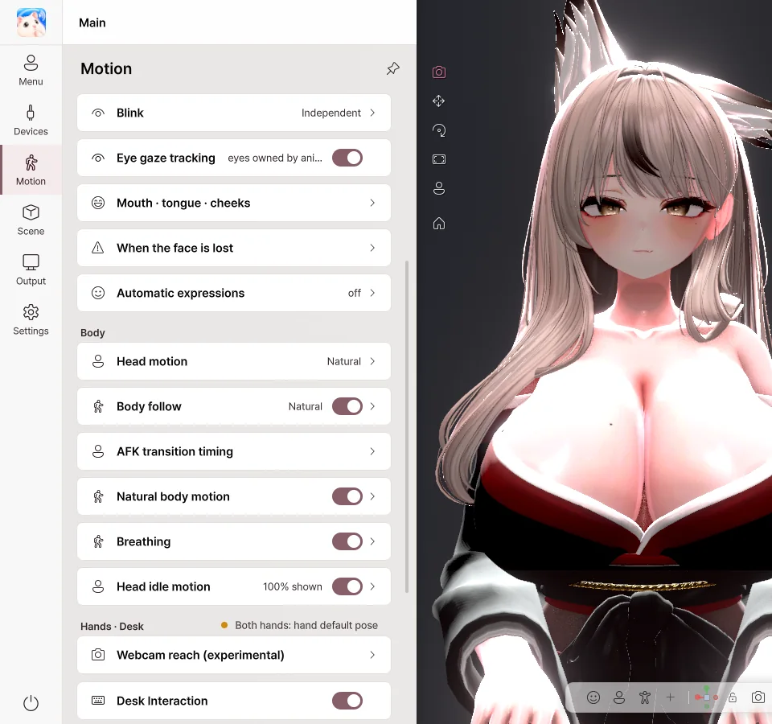
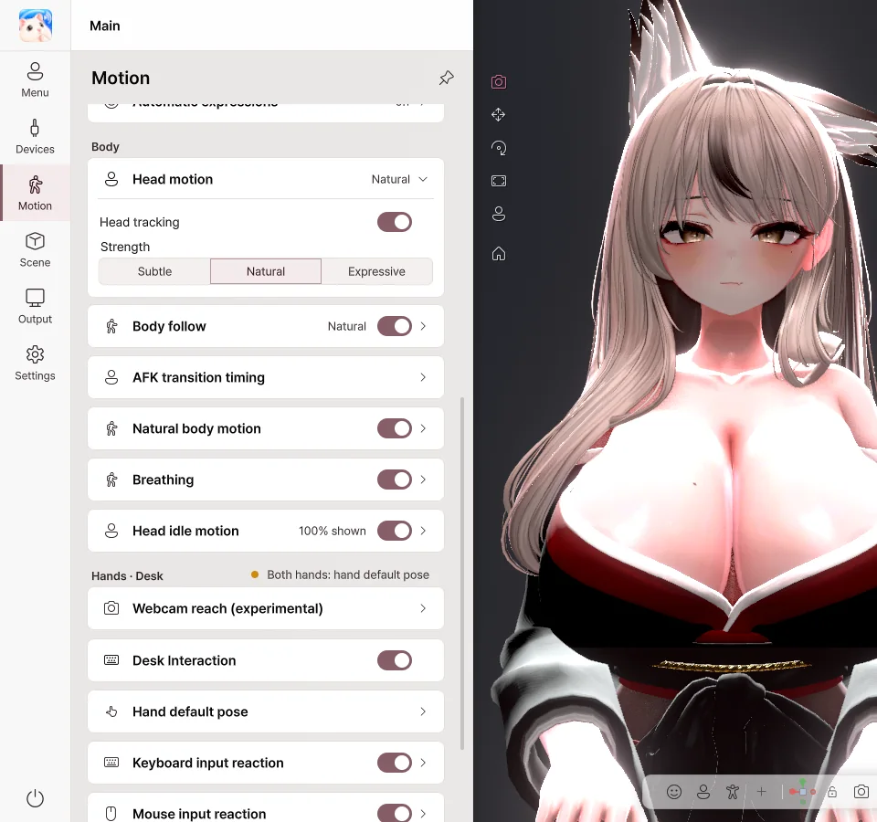
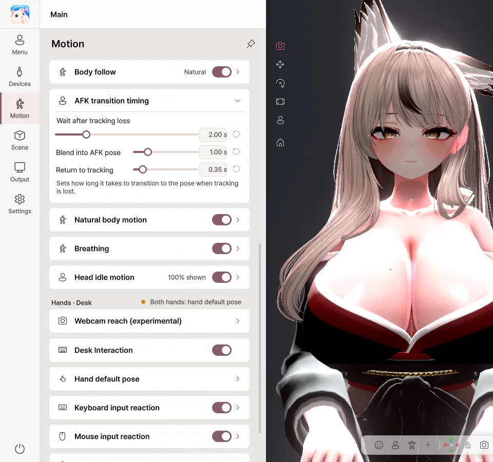
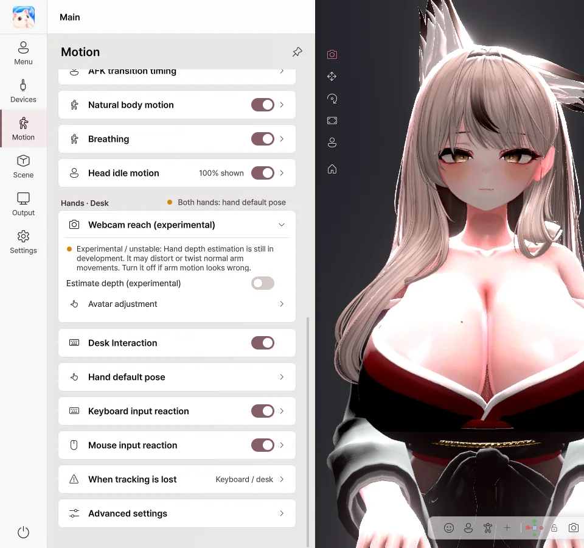

7. Motion
fine-tuning motion and understanding the sliders

| Control | Lower / Off | Higher / On |
|---|---|---|
| Face sensitivity | Subtle expressions may barely show; noise is reduced | Small changes become obvious but can be over-exaggerated |
| Expression smoothing | Eyes/mouth respond rapidly, sometimes jittery | Motion blends gently, but quick blinks and syllables may lag |
| Lip-sync strength | Smaller mouth opening | Larger mouth movement, possibly unnatural on some models |
| Blink sensitivity / automatic blinking | Reliance on captured eye input | More response to small closures or idle blinks |
| Webcam arms Dynamic / Legacy | Legacy preserves behavior closer to 1.1.6 | Dynamic adds newer arm/hand distance estimation, with results depending on camera setup |
| Arm/hand smoothing | Immediate gestures but more tracking noise | Less shake, more delay after rapid gestures |
| Hand depth estimation (experimental) | More stable flat/webcam motion | Tries to follow a hand reaching toward the camera but can distort the arm or wrist |
| AFK entry wait | Short loss quickly activates the waiting pose | Ignores brief interruptions and waits longer before entering AFK |
| AFK transition / return duration | Snaps to/from waiting expression and pose | Smooth transitions, but normal tracking takes longer to reappear |
| Idle breathing/blink | Character rests still while idle | Adds small movements without tracking input |

A connected iPhone does not automatically mean every frame contains fresh face tracking. If the face freezes, inspect actual source tracking, stale/repeated values, AFK timing and front calibration. Pose-specific Face, Head, Arms, Fingers and Torso switches are independent: Head Off + Face On keeps the head pose but allows facial expressions to animate.
Gaze target (Camera/Person/None) controls whom the avatar watches. Raising look strength makes eyes/head pursue the target more strongly, while lowering it lets incoming tracking dominate. Experimental Look At IK may be disabled by default; turn it off if the head turns too far. Saved manual poses may take precedence over automatically selected AFK poses.
Set how the face, body and hands move. Settings are saved separately for each avatar.
Face tracking

- Mirror — Moves to the same side as you, like a mirror.
- Arms · Hands · Fingers — Moves each part with the webcam.
- Gestures → expressions — The avatar's expression changes to match your hand shape.
- Face tracking — Turns facial expression tracking on and off.
How expressions move
Facial expressions follow the setup already in your avatar. Avatar Live does not create or convert the avatar's expressions.
| Avatar setup | How it moves |
|---|---|
| Has VRCFaceTracking (VRCFT) parameters | Moves through the avatar's VRCFT setup. |
| Has the 52 ARKit shape keys (Perfect Sync) | Drives those shape keys directly. |
| Neither | Mostly the avatar's basic expressions such as blinking and lip sync; finer expressions may not show. |
- Even though the webcam or iPhone reads expressions as 52 values, an expression shows only when the avatar has the matching parameter or shape key.
- If the avatar has only some of the shape keys, only those move.
We plan to improve this so that all 52 expressions are recognised and connected to your avatar, and so that avatars without these setups can be bound to the face directly. Timing may change.
Automatic face setup

Click the Automatic face setup button to start calibration. Make each expression as the on-screen guide shows, then click Capture. At the end, click Apply, and the expressions are adjusted to fit your face.
Where you look during the first step becomes the avatar's straight-ahead gaze. Please look at the screen the way you do while streaming.
Face adjustment

- Adjust, one by one, how strongly the eye, brow, mouth and cheek expressions show.
- Drag a slider to the right, and that expression shows more strongly.
- Turn on Edit left and right together to change both sides at once.
- Turn on Smoothing to reduce jitter in the expressions.
Blink · Mouth

- Blink › Mode — Independent works well for winks, and with Synchronized both eyes close together.
- Eye gaze tracking — The avatar's eyes follow your gaze.
- Auto level — Automatically matches how wide the mouth opens to how loud your voice is.
- Voice calibration — Click a vowel button and say the vowel, and it adapts to your voice.
- Tongue · cheek puff — Stick out the tongue or puff the cheeks with a button or a hotkey.
Eye gaze and Eyes on the camera

Adjust gaze tracking under Motion › Face. Enable Eyes on the camera to have the avatar look toward the camera. This works independently even when facial tracking is OFF for a pose. Head tracking also has its own switch; camera gaze does not restore unrelated facial expressions.
Body

- Head motion — Choose from Subtle · Natural · Expressive.
- Body follow — When you turn your head, the body follows naturally.
- Natural body motion · Breathing — The avatar moves as if it were alive, even while you keep still.
- Upper body — With webcam full body on, your shoulder movement tilts and turns the upper body. This works even at a desk where your legs can't be seen.
- Full body — Follows the torso, legs, sitting and standing with the webcam or VMC. Please see Devices › Full body · Finger joints.
AFK timing and tracking loss

AFK timing has moved out of Settings to Motion › Body. Adjust these three values for each avatar with sliders or direct numeric entry:
- Tracking-loss wait: how long tracking must be lost before entering AFK.
- Transition into AFK: how long the pose blends toward the idle pose.
- Return after tracking resumes: how long it takes to return to normal motion.
Existing per-avatar values are preserved. The default pose, tracking-loss idle pose and idle expression are configured separately; see Posing.
Webcam hand-depth estimation (experimental)

This estimates how far a hand reaches toward the webcam. Depending on the camera, it may cause the arms or wrists to twist or jitter. Keep it OFF for ordinary use, and review hand jitter reduction if tracking becomes unstable.
Hands · Desk
- Desk Interaction — When your hands aren't visible to the camera, the avatar's hands move along with your keyboard and mouse.
- Hand default pose — Adjust the desk height, hand spacing and wrist angle.
- Keyboard · Mouse input reaction — Set how large the typing and mouse movements are.
- Lower your hands, and the arms go straight to the desk pose. Raise them again, and they return smoothly to tracking. The elbows follow naturally even when your body sways a lot or you're sitting.
- You can set an arm · hand pose made in Posing with Use as the desk pose (arms and hands) (Pro).
Keyboard input is used only to move the avatar's hands. The characters you type are not saved or sent.
💡 Camera detection of the tongue and cheek puff is an experimental feature.